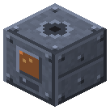

Lead Chamber
Era 2Steam and mechanics

idle

running
Sulfur + 500 mB steam → 400 mB sulfuric acid. Saltpeter is the catalyst, 1 per 8 batches.
Parameters
| Era | 2 — Steam and mechanics |
|---|---|
| Multiblock | no |
| Drive | steam |
| Tanks, mB | 8000, 8000 |
| What it does | sulfur/pyrite + saltpeter (catalyst) -> sulfuric acid |
| Input energy | steam 500 mB/batch |
| Made of | lead plates, boiler, brick |
Numbers
| lead chamber: steam per batch | 500 mB |
|---|---|
| lead chamber: sulfuric acid output | 400 mB |
| lead chamber: batch | 400 ticks |
| saltpeter catalyst per batch | 8 batches |
Fed by
- dustSaltpeter ← Chemical Reactor, High-Pressure Reactor
- dustSulfur ← Chemical Reactor, High-Pressure Reactor
- steam ← Reactor Steam Generator
Feeds
- Sulfuric Acid → Chemical Reactor, High-Pressure Reactor, Mixer, Brick Retort